Blocks 1-4 on the x-axis. Timing plots appear first; scientific findings and tables follow the figures.
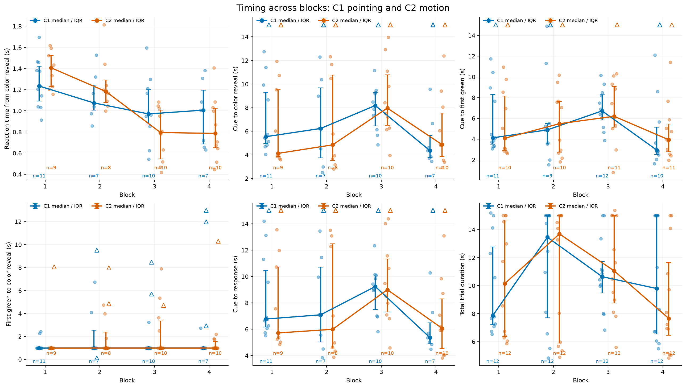
Every panel uses block on the x-axis. Dots: individual trials; lines: medians; bars: IQR. Open triangles: right-censored intervals, excluded from observed-event medians. Reaction times include all valid responses, independent of accuracy. n labels give observed values per cue/block.
SVG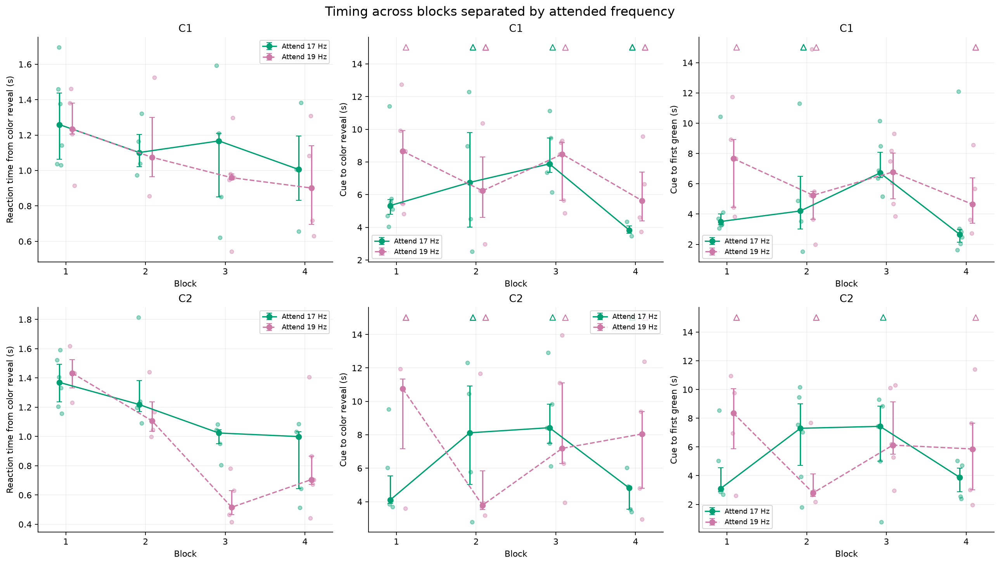
C1 top row; C2 bottom row. Six trials per cue x frequency x block. Lines: observed-event median; bars: IQR; dots: individual trials; open triangles: censored. All valid reaction times are included.
SVG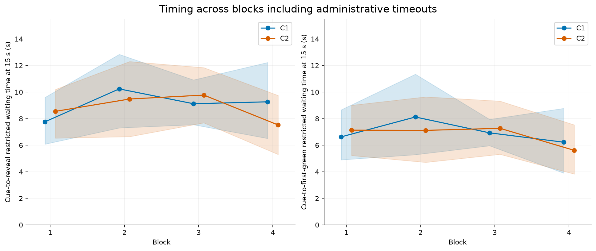
All 12 trials per cue/block contribute. Right-censored waiting times contribute the known 15-second tail to restricted means. Shading: 95% trial-bootstrap intervals, resampling within attended-frequency cells; conditional on this participant and block.
SVG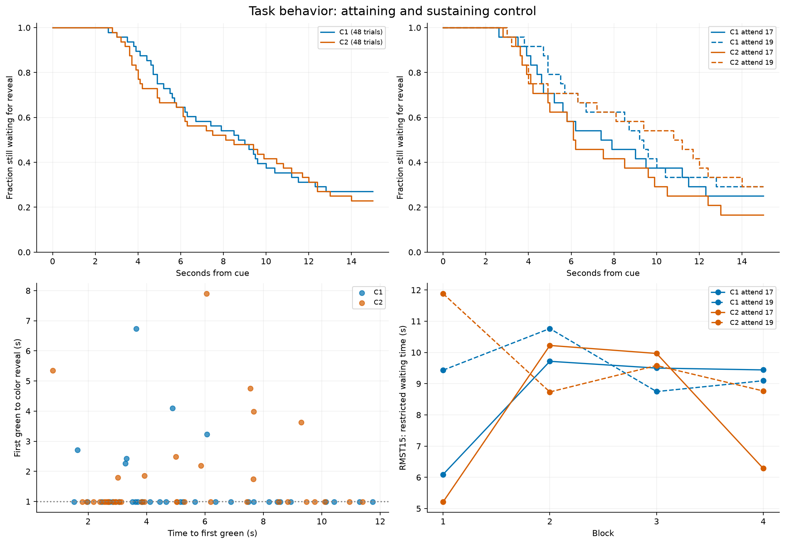
All blocks pooled except the scalar block comparison. Timeouts are censored. First-green-to-reveal points include revealed trials only.
SVG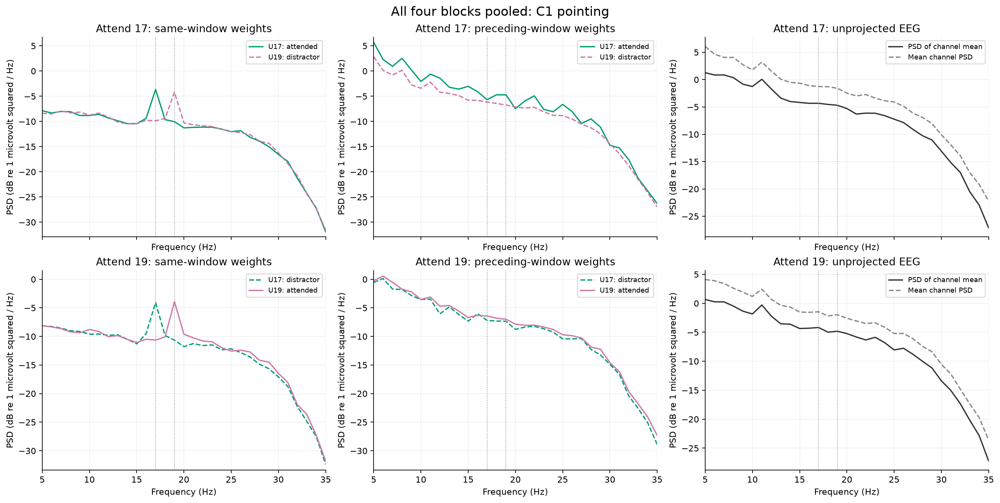
24 equally weighted trials per row. Full 1-second windows updated every 100 ms; native 1 Hz resolution. Average linear power before dB. Same-data fitting alone cannot establish an attention effect.
SVG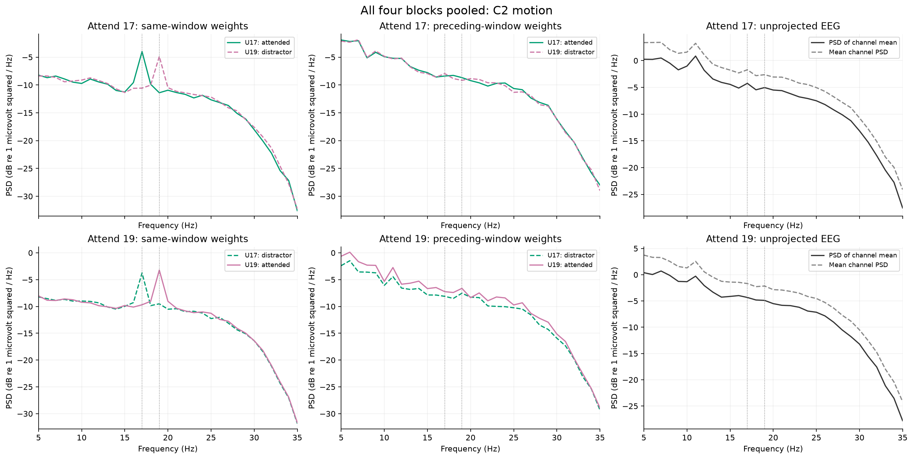
24 equally weighted trials per row. Full 1-second windows updated every 100 ms; native 1 Hz resolution. Average linear power before dB. Same-data fitting alone cannot establish an attention effect.
SVG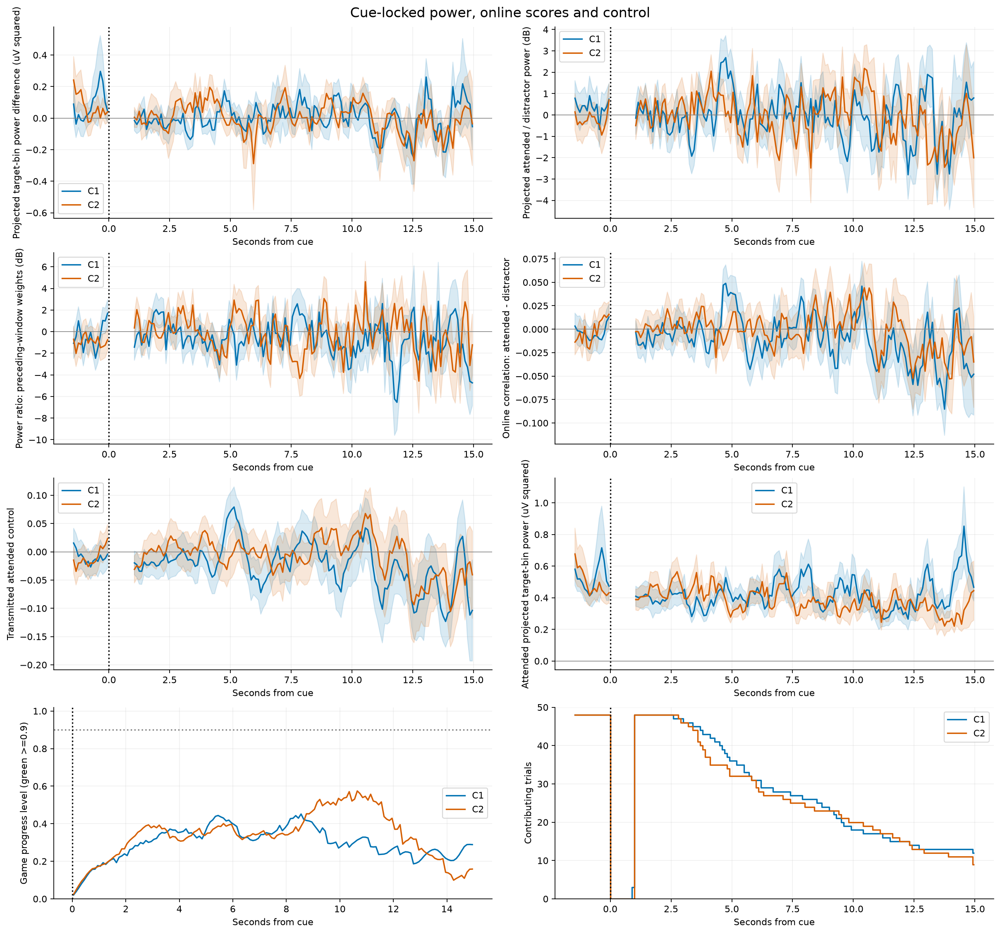
All blocks pooled. 100 ms updates, trailing 1-second estimators. Shading: between-trial SEM. Display bins with >=5 trials; counts below. Reveal-aligned growth is partly selected by the stopping rule.
SVG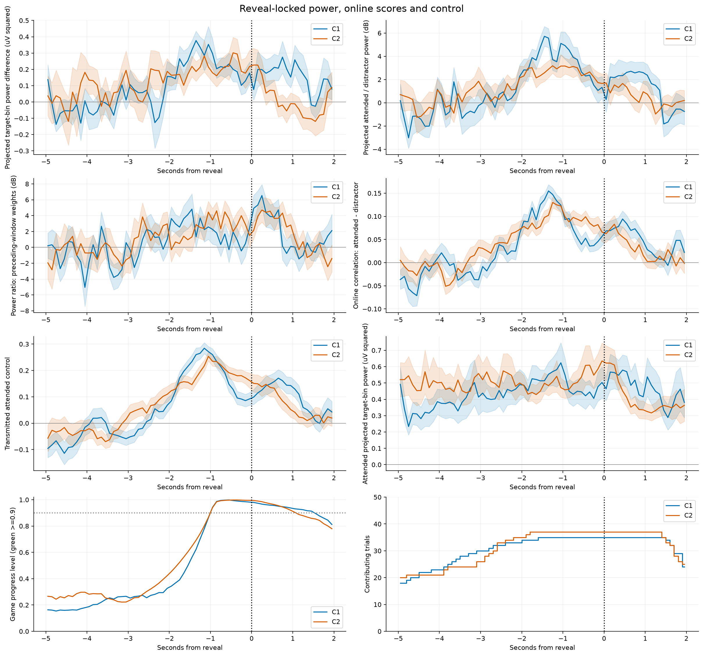
All blocks pooled. 100 ms updates, trailing 1-second estimators. Shading: between-trial SEM. Display bins with >=5 trials; counts below. Reveal-aligned growth is partly selected by the stopping rule.
SVG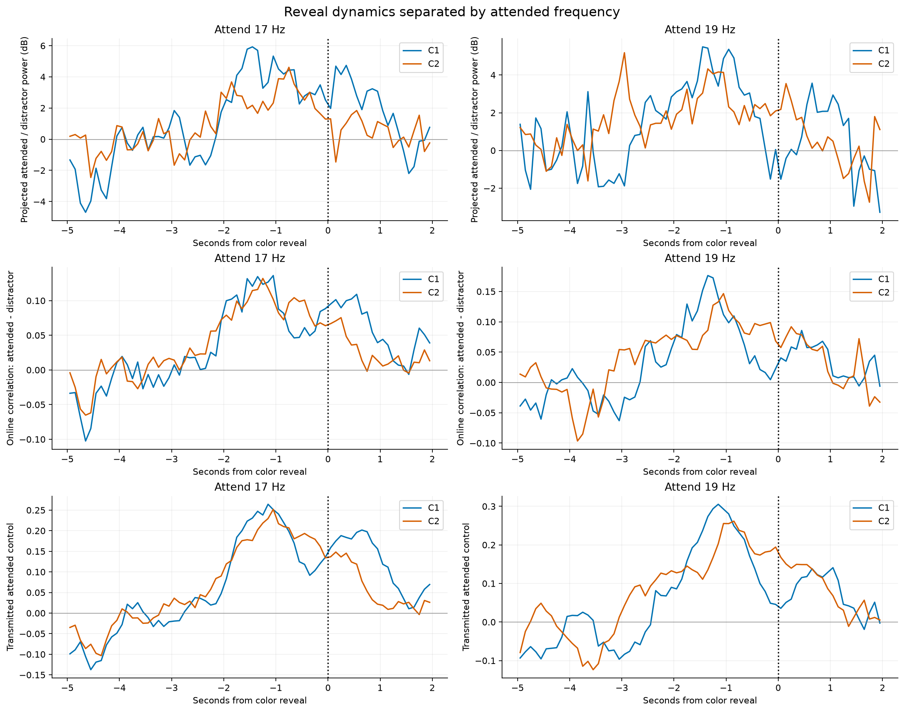
17/19 Hz balanced within cue and block. Bins require >=5 trials. Successful-reveal selection remains.
SVG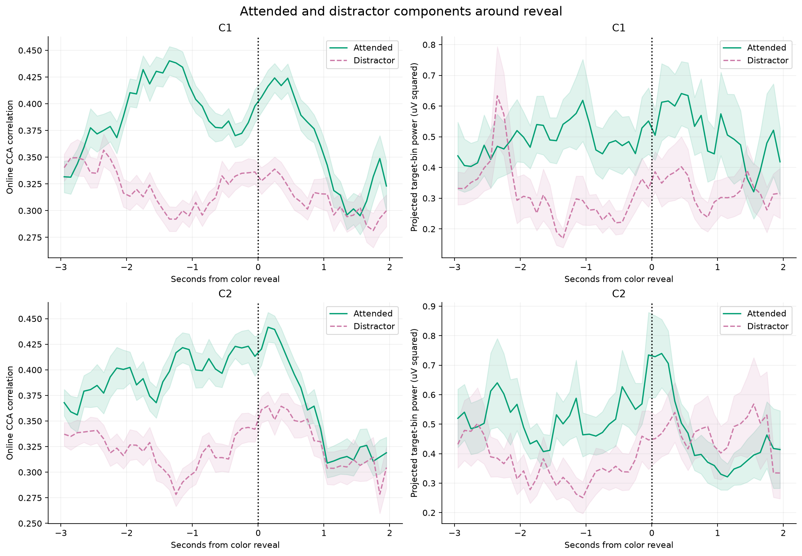
Fixed pre-reveal cohort: 56 trials with reveal latency >=4 s. Shading: between-trial SEM. Post-trigger support decreases with trial stopping. Power uses same-window fits; the separate preceding-window analysis checks fitting sensitivity.
SVG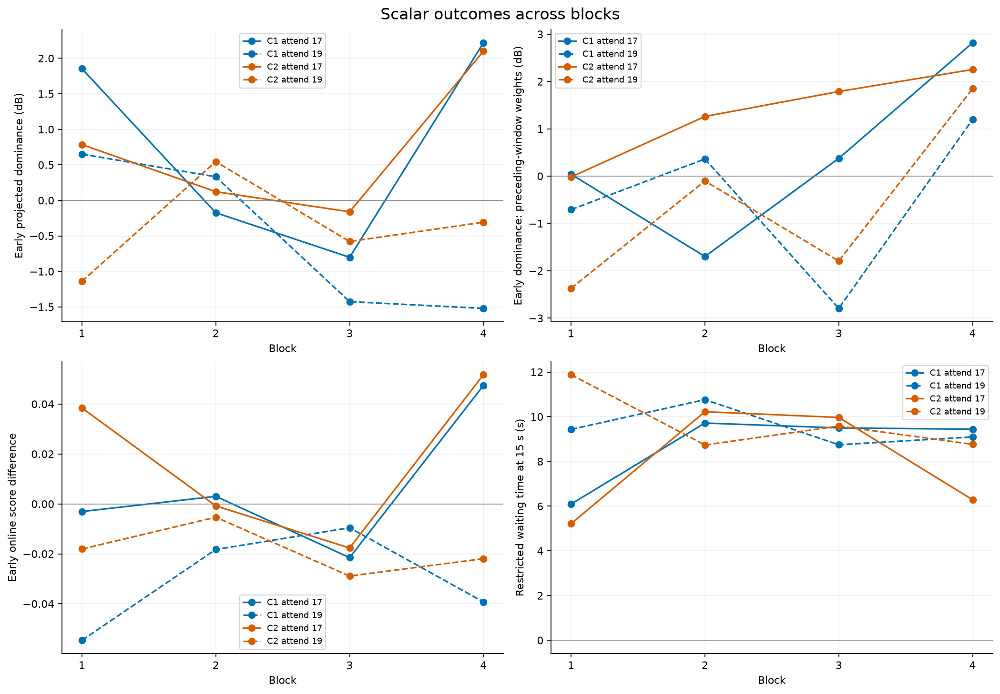
Six trials per point. Spectra remain pooled. Early endpoints 1-2 s after cue precede every reveal. Block differences are descriptive; no learning claim.
SVG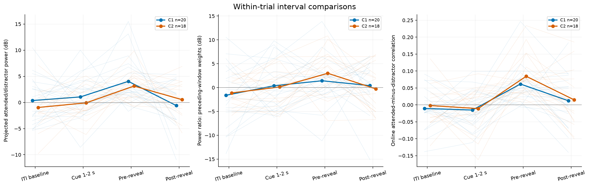
Fixed cohort of 38 revealed trials with latency >=4 s and complete +1 to +2 s post-reveal coverage. Thin lines are individual trials; thick lines are unweighted descriptive cue means. Formal contrasts in the tables balance cells. Pre/post reflect outcome selection and visual/response changes.
SVG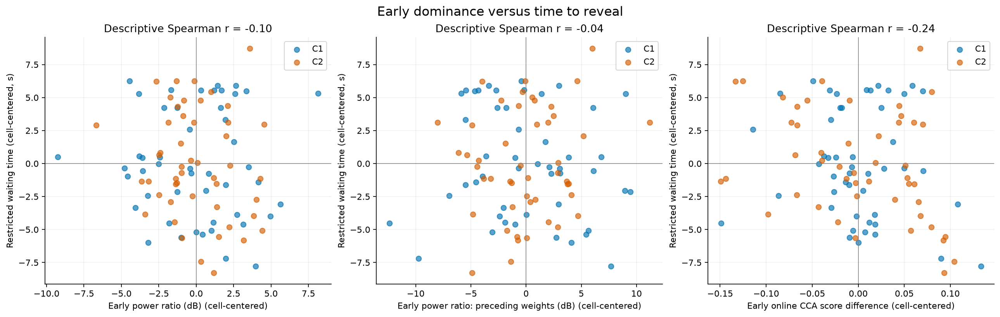
96 trial means; cell centering controls additive session/cue/frequency means. No causal interpretation or confirmatory p-values.
SVG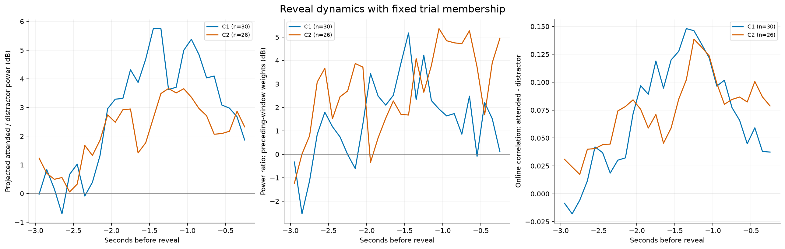
Same 56 trials throughout: revealed at >=4 s. Outcome-dependent selection remains.
SVG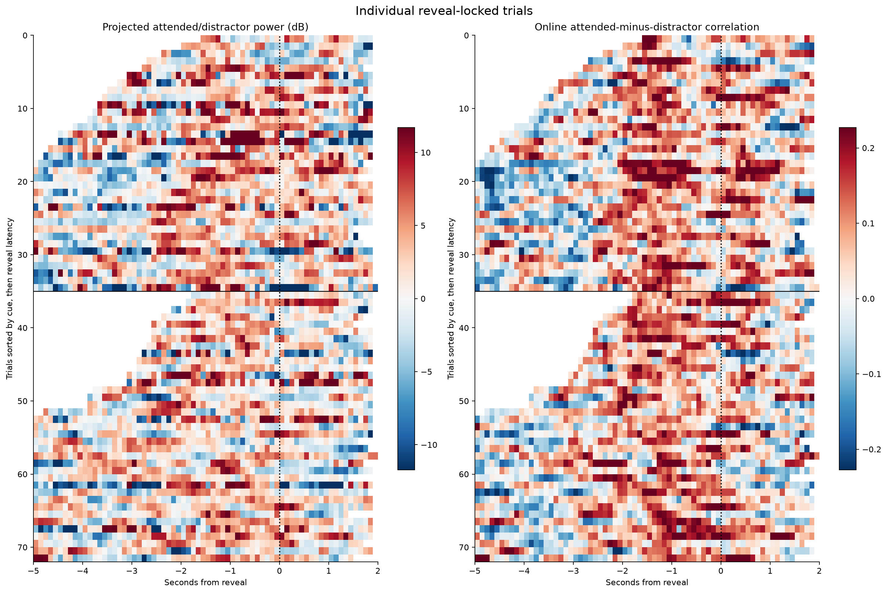
Revealed C1 then C2 trials, sorted by latency. White=unavailable. Symmetric 95th absolute percentile limits for display only; all observations retained in calculations.
SVG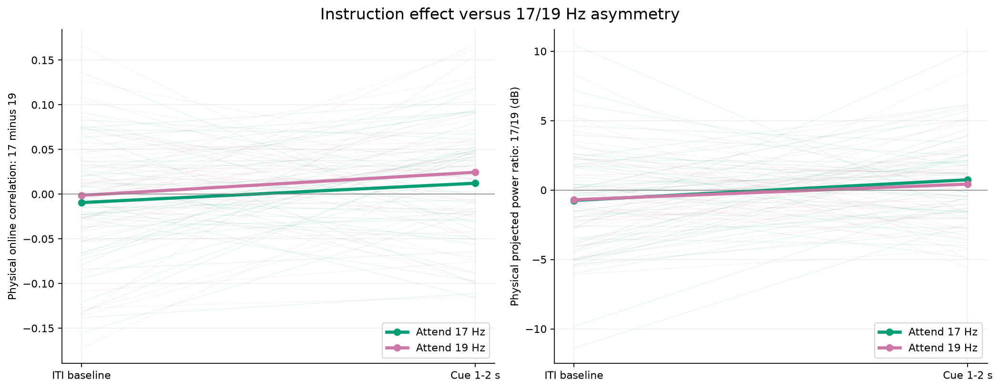
48 trials per assignment. Both curves rising in physical 17-minus-19 coordinates indicates a common frequency asymmetry; opposite shifts would support instruction following. Thin lines: trial observations. Formal balanced contrasts are exported.
SVG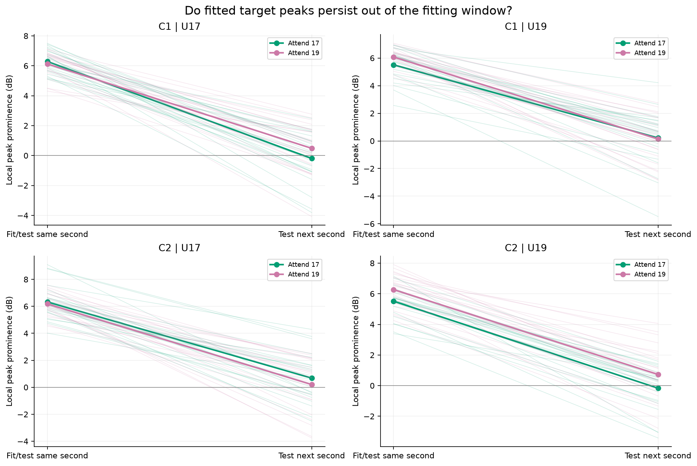
Full cue-to-reveal/timeout intervals; PSD averaged within each trial first. Local prominence uses target / mean(16,18,20 Hz) within its own projection. Target peaks that collapse out of fitting window provide weak evidence of a stable spatial signal.
SVG# Leaf Game findings - 4 November 2026 Four blocks pooled; 96 trials; 72 reveals and 24 administrative timeouts. - C1: RMST15=9.10 s; first-green-to-reveal median=0.99 s among reveals; 7 trials reached green but timed out. - C2: RMST15=8.83 s; first-green-to-reveal median=0.99 s among reveals; 5 trials reached green but timed out. Key interpretation: - Early task-minus-ITI change favors 17 Hz independent of attendance: physical frequency asymmetry 0.0238, exploratory 95% interval [0.0066, 0.0418]. Instruction-following contrast -0.0042 [-0.0389, 0.0323] remains uncertain. - Optimized target peaks largely disappear on the next non-overlapping second. Treat these fitted peaks as descriptive, not independent validation of a stable response. - Reveal-aligned score increases contain both attended enhancement and distractor suppression. The stopping rule selects these trials, so this does not independently establish learning. - Of 24 timeouts, 12 never reached green and 12 reached green without a reveal before the deadline. - Recorded border modulation matches logged 17/19 Hz on scheduled phase time (median regression R squared approximately 1); frame-end software timing gives median R squared approximately 0.99. No physical photodiode measurement is available. Exploratory balanced contrasts: - wait15_s, C2 minus C1: -0.267 [95% trial-bootstrap interval -1.903, 1.343], n=96 - wait15_s, attend19 minus attend17: 1.320 [95% trial-bootstrap interval -0.251, 2.955], n=96 - early_score_diff, C2 minus C1: 0.012 [95% trial-bootstrap interval -0.012, 0.036], n=96 - early_power_db, C2 minus C1: 0.029 [95% trial-bootstrap interval -1.126, 1.191], n=96 - early_power_db_previous, C2 minus C1: 0.409 [95% trial-bootstrap interval -1.401, 2.115], n=96 - early_score_diff, attend19 minus attend17: -0.037 [95% trial-bootstrap interval -0.061, -0.014], n=96 - pre_minus_earlier_power_db, balanced paired change: 2.261 [95% trial-bootstrap interval 1.279, 3.314], n=56 - pre_minus_earlier_power_db_previous, balanced paired change: 1.505 [95% trial-bootstrap interval 0.018, 2.961], n=56 - pre_minus_earlier_score_diff, balanced paired change: 0.056 [95% trial-bootstrap interval 0.041, 0.071], n=56 - pre_minus_earlier_score_att, balanced paired change: 0.034 [95% trial-bootstrap interval 0.020, 0.050], n=56 - pre_minus_earlier_score_dist, balanced paired change: -0.022 [95% trial-bootstrap interval -0.035, -0.008], n=56 Trial-level early measure vs restricted waiting time (within-cell centered): - early_power_db: descriptive Spearman r=-0.101. - early_power_db_previous: descriptive Spearman r=-0.044. - early_score_diff: descriptive Spearman r=-0.241. Instruction versus physical frequency decomposition: - early_score_diff, instruction contrast in physical 17-minus-19 coordinates: -0.0123 [-0.0365, 0.0150]. - early_score_diff, physical 17-minus-19 frequency asymmetry: 0.0183 [0.0063, 0.0307]. - early_minus_baseline_score_diff, instruction contrast in physical 17-minus-19 coordinates: -0.0042 [-0.0389, 0.0323]. - early_minus_baseline_score_diff, physical 17-minus-19 frequency asymmetry: 0.0238 [0.0066, 0.0418]. - early_power_db, instruction contrast in physical 17-minus-19 coordinates: 0.3123 [-0.8342, 1.4419]. - early_power_db, physical 17-minus-19 frequency asymmetry: 0.5866 [0.0407, 1.1653]. - early_minus_baseline_power_db, instruction contrast in physical 17-minus-19 coordinates: 0.3650 [-1.5799, 2.2162]. - early_minus_baseline_power_db, physical 17-minus-19 frequency asymmetry: 1.3106 [0.3716, 2.2480]. Projection peak prominence, mean over trial spectra: - preceding_window, U17: 0.29 dB relative to local non-target bins. - preceding_window, U19: 0.23 dB relative to local non-target bins. - same_window, U17: 6.23 dB relative to local non-target bins. - same_window, U19: 5.84 dB relative to local non-target bins. Pre-reveal growth is partly selected by the integration-and-hold rule, not independent evidence of learning. Intervals crossing zero leave effects uncertain. Preceding-window evaluation, fixed-cohort results and block plots are sensitivity checks, not confirmatory replications.
| cue | attended_hz | n | reveals | RMST15_s | first_green_RMST15_s | median_observed_reveal_s | median_first_green_to_reveal_s | green_reached_but_timeout |
|---|---|---|---|---|---|---|---|---|
| c1 | 17.0 | 24 | 18 | 8.687520 | 6.117450 | 5.641870 | 0.992687 | 4 |
| c1 | 19.0 | 24 | 17 | 9.509820 | 7.837620 | 6.652808 | 0.991708 | 3 |
| c2 | 17.0 | 24 | 20 | 7.923133 | 5.589024 | 5.900879 | 0.992168 | 3 |
| c2 | 19.0 | 24 | 17 | 9.740686 | 7.980023 | 7.190407 | 0.992414 | 2 |
| metric | contrast | estimate | ci_low | ci_high | n_trials |
|---|---|---|---|---|---|
| wait15_s | C2 minus C1 | -0.266760 | -1.903255 | 1.342525 | 96 |
| wait15_s | attend19 minus attend17 | 1.319926 | -0.250877 | 2.955129 | 96 |
| early_power_db | C2 minus C1 | 0.029164 | -1.125813 | 1.190984 | 96 |
| early_power_db | attend19 minus attend17 | -1.173191 | -2.377498 | -0.066721 | 96 |
| early_power_db_previous | C2 minus C1 | 0.409008 | -1.400751 | 2.114521 | 96 |
| early_power_db_previous | attend19 minus attend17 | -1.397282 | -3.153233 | 0.347215 | 96 |
| early_score_diff | C2 minus C1 | 0.011662 | -0.012477 | 0.035751 | 96 |
| early_score_diff | attend19 minus attend17 | -0.036699 | -0.061153 | -0.013609 | 96 |
| early_control | C2 minus C1 | 0.014386 | -0.029764 | 0.055416 | 96 |
| early_control | attend19 minus attend17 | -0.076615 | -0.120952 | -0.031167 | 96 |
| early_minus_baseline_power_db | C2 minus C1 | 0.608763 | -1.234776 | 2.394397 | 96 |
| early_minus_baseline_power_db | attend19 minus attend17 | -2.621218 | -4.490478 | -0.783974 | 96 |
| early_minus_baseline_score_diff | C2 minus C1 | 0.005206 | -0.030457 | 0.040954 | 96 |
| early_minus_baseline_score_diff | attend19 minus attend17 | -0.047513 | -0.082759 | -0.010345 | 96 |
| pre_minus_earlier_power_db | balanced paired change | 2.260926 | 1.279213 | 3.314323 | 56 |
| pre_minus_earlier_power_db_previous | balanced paired change | 1.504651 | 0.017671 | 2.961166 | 56 |
| pre_minus_earlier_score_diff | balanced paired change | 0.056406 | 0.041054 | 0.070919 | 56 |
| pre_minus_earlier_control | balanced paired change | 0.165754 | 0.133083 | 0.199838 | 56 |
| pre_minus_earlier_score_att | balanced paired change | 0.034497 | 0.019873 | 0.049737 | 56 |
| pre_minus_earlier_score_dist | balanced paired change | -0.021908 | -0.035281 | -0.008348 | 56 |
| post_minus_pre_power_db | balanced paired change | -2.724180 | -3.855040 | -1.642640 | 49 |
| post_minus_pre_score_diff | balanced paired change | -0.051715 | -0.070147 | -0.033184 | 49 |